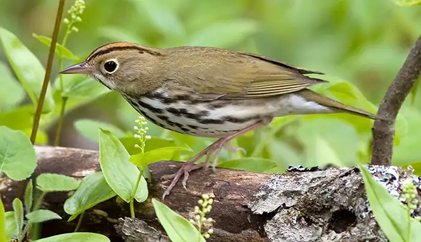
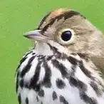
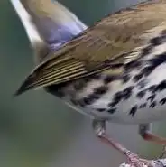
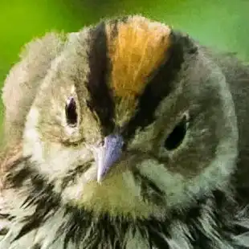
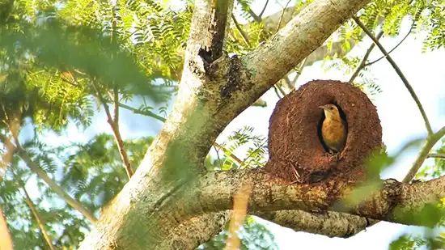
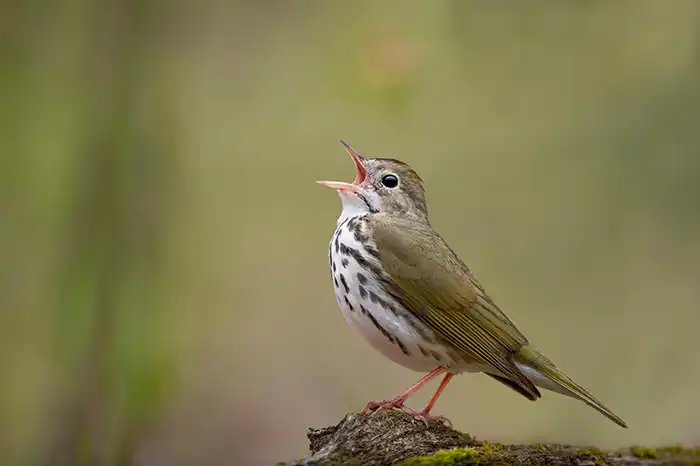

The ovenbird was formally described in 1766 by the Swedish naturalist Carl Linnaeus in the twelfth edition of his Systema Naturae under the binomial name Motacilla aurocapilla. The specific epithet combines Latin aurum meaning "gold" with -capillus meaning "-crowned". Linnaeus based his entry on "The golden-crowned thrush" that had been described and illustrated in 1758 by the English naturalist George Edwards in his book Gleanings of Natural History. Edwards had been given a specimen that had been collected on a ship off the coast of Hispaniola.
The ovenbird is now the only species placed in the genus Seiurus. The genus name is from Ancient Greek σειουρος/seiouros meaning "wag-tail".

Ovenbirds are large wood warblers and may sometimes be confused by the untrained for a thrush. Adults measure 11–16 cm (4.3–6.3 in) long and span 19–26 cm (7.5–10.2 in) across the wings. They tend to be heavier in winter and particularly at the start of their migration. They have olive-brown upperparts and white underparts heavily streaked with black; the flanks have an olive hue. A white ring surrounds the eyes, and a black stripe runs below the cheek. They have a line of orange feathers with olive-green tips running along the top of their head, bordered on each side with blackish-brown. The orange feathers can be erected to form a small crest. The eyes and the upper part of the thin pointed beak are dark, while the lower beak is horn-colored and the legs and feet are pinkish.



Their breeding habitats are mature deciduous and mixed forests, especially sites with little undergrowth, across Canada and the eastern United States. For foraging, it prefers woodland with abundant undergrowth of shrubs; essentially, it thrives best in a mix of primary and secondary forest.
The nest, referred to as the "oven" (which gives the bird its name), is a domed structure placed on the ground, woven from vegetation, and containing a side entrance. The female usually lays 4–5 eggs speckled with brown or gray. Only the female incubates, for 11–14 days. Young are altricial and are fed by both parents. First flight is at 8–11 days of age. The placement of the nest on the ground makes predation by snakes, red squirrels, and chipmunks (Tamias) a greater concern than for tree-nesting birds. Chipmunks have been known to burrow directly into the nest to eat the young birds. The female can perform a distraction display, simulating an injured bird, when a potential predator is in the vicinity of the nest.

Ovenbirds forage on the ground in dead leaves, sometimes hovering or catching insects in flight. This bird frequently tilts its tail up and bobs its head while walking; at rest, the tail may be flicked up and slowly lowered again, and alarmed birds flick the tail frequently from a half-raised position. These birds mainly eat terrestrial arthropods and snails, and also include fruit in their diet during winter.
Ovenbirds migrate to the southeastern United States, the Caribbean, and from Mexico to northern South America. The birds are territorial all year round, occurring either singly or (in the breeding season) as mated pairs, for a short time accompanied by their young. During migration, they tend to travel in larger groups however, dispersing again once they reach their destination. In winter, they dwell mainly in lowlands, but may ascend up to 1,500 m (4,900 ft) ASL e.g. in Costa Rica. The first migrants leave in late August and appear on the wintering grounds as early as September, with successive waves arriving until late October or so. They depart again to breed between late March and early May, arriving on the breeding grounds throughout April and May. Migration times do not seem to have changed much over the course of the 20th century.
The main song of the ovenbird is a series of strident, relatively low-pitched, bisyllabic motives repeated without pause about eight times and increasing in volume. Usually, the second syllable in each motive is sharply accented:
"chur-tee' chur-tee' chur-tee' chur-tee' chur-TEE chur-TEE chur-TEE!"

Males sing this song loudest when broadcast singing and sing more quietly when they are countersinging with a rival male up close. Male ovenbirds also utter a sweet chattering song in the air at twilight, after the manner of the skylark, incorporating portions of the main song into a jumble of sputtering notes and mimicry as they dive back to earth.
© Copyright 2026 A. Dorsey, F. Sarra